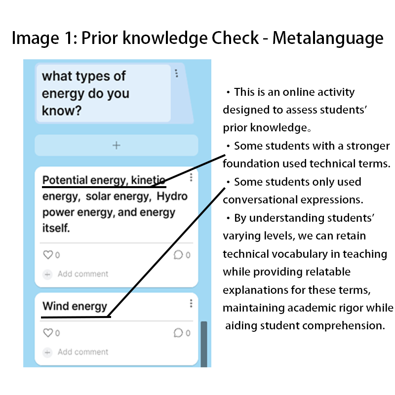
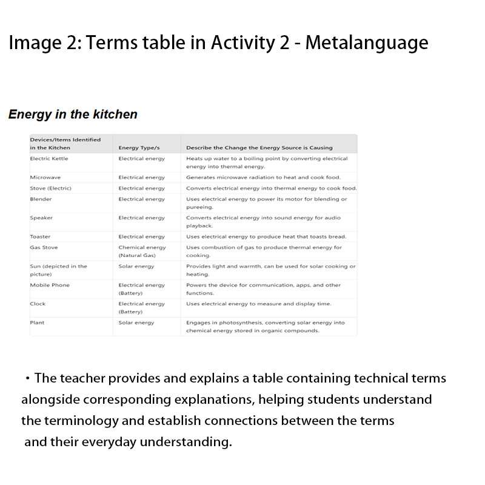
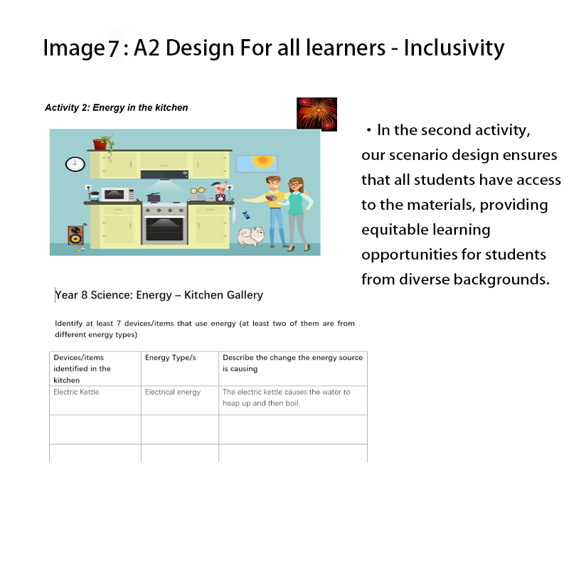
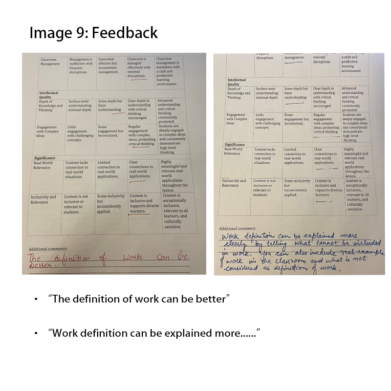
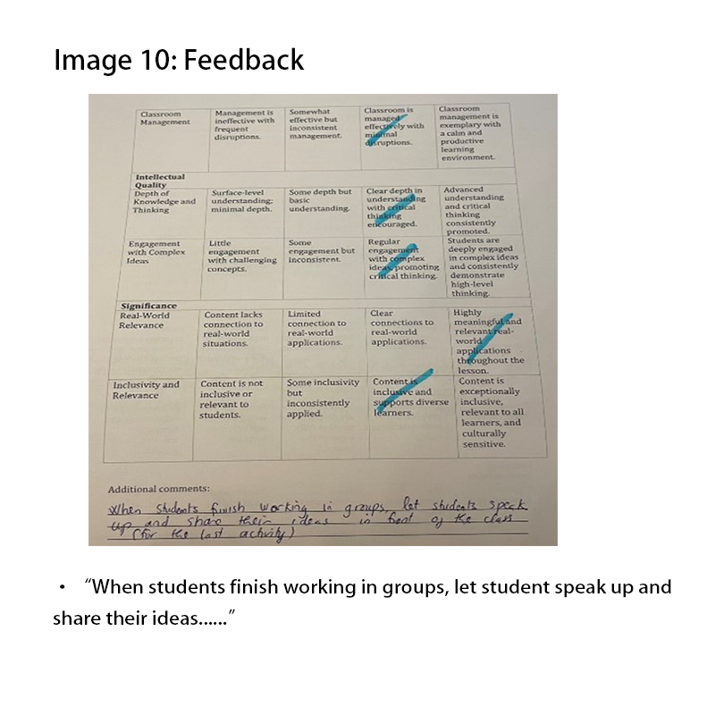

Overview
In this Year 8 science lesson on "Energy," the objectives are to engage students, check prior knowledge, and provide a basic understanding of the topic. Key elements from the Quality Teaching Model (QTM) include:
- Metalanguage:
- Substantive Communication:
- Engagement:
- Social Support:
- Inclusivity:
- Background Knowledge:
Dimension 1: Intellectual Quality
In a diverse classroom, certain vocabulary can be challenging for some students. However, when providing a modified curriculum for students, it is important to retain the use of metalanguage. (Hu, 2010) As this is the first lesson of the unit, some terms will inevitably feel unfamiliar to students. For example, in everyday language, the term "thermal energy" can also be referred to as "heat energy," but there are subtle differences between the two in scientific definitions. The teaching of metalanguage in science courses aims to equip students with precise and scientific expressions, while at the same time, through explanations of the metalanguage with simple everyday languages or multimedia methods, helping them connect the terminology with real-life situations and descriptions. (Hu, 2010)
 Substantive Communication aims to make students' thinking valuable and visible. (Intellectual Rigour, n.d.) In this lesson, the use of facilitating questions was intended to extend students' discussions, prompting them to elaborate on their thoughts and provide evidence when expressing their viewpoints, making the discussion deeper and more meaningful. At the same time, by encouraging students to share their perspectives, the goal was to cultivate the ability to reflect further by comparing differences between various opinions. (Main, 2017, p. 296) Facilitating Substantive Communication also allows the teacher to better understand students' prior knowledge and identify potential misconceptions, which helps in adjusting the focus of subsequent teaching through feedforward content. For students, continuous multi-directional interaction can stimulate deep thinking and foster curiosity about the unknown, leading to knowledge acquisition that is not passively received from external definitions but actively absorbed through exploration and reflection.


Dimension 2: Quality Learning Environment
For most teenagers, direct and monotonous learning can be difficult to stay focused on and engaged with, largely due to the characteristics of this age group. Making a lesson interesting is crucial for middle school students' learning. (Main, 2017, pp. 52–85) In this lesson, we designed an outdoor activity where students could leave the classroom, enjoy the sunshine and breeze, and observe places where energy is present around them. Compared to sitting in the classroom thinking about the same topic, students showed greater enthusiasm and participation during the outdoor activity, which directly contributed to the quality of subsequent discussions. For the first lesson of this unit, allowing students to engage with the topic and get a general understanding of the content proved to be more meaningful than explicit teaching, laying the foundation for deeper learning in future lessons. (Stein, Miness, & Kintz, 2018, pp. 2–10)

Dimension 3: Significance
Inclusive lesson content directly affects whether students can actively participate in class activities and understand the learning material. (Florian, 2015) For example, the relationship between photovoltaic glass and solar energy might be a completely unfamiliar concept for some students. This means that using such examples would be unfair and inappropriate. Therefore, the lesson was designed with inclusivity in mind, ensuring that the examples used in instruction were universally relatable, so that no student would be left out of discussions due to a lack of familiarity with the content. All students, regardless of their background or other factors, should be able to learn in a fair and inclusive environment.
Combining background knowledge with current learning content can greatly enhance students' understanding of what they are learning and provide them with the ability to solve real-world problems, especially when integrating knowledge across different subjects. (Main, 2017, pp. 190-207) In this lesson, we connected students' understanding of energy from their everyday experiences with textbook knowledge. For example, by asking questions like "What do you think energy is?" and "What forms of energy exist in the kitchen?", we helped students better understand the learning content in a more concrete way. At the same time, these questions provided insight into students' prior knowledge, allowing us to adjust subsequent lessons more effectively.

References
- Hu, G. (2010). Revisiting the role of metalanguage in L2 teaching and learning. English Australia Journal, 26(1), 61-70.
- Intellectual Rigour. (n.d.). Substantive communication. Intellectual Rigour. Retrieved October 27, 2024, from https://cixelsyd96.wixsite.com/intellectualrigour/substantive-communication
- Main, K., & Bryer, N. (2017). Teaching Middle Years: Rethinking curriculum, pedagogy and assessment (Third edition). Routledge. https://doi.org/10.4324/9781003117780
- Stein, K. C., Miness, A., & Kintz, T. (2018). Teachers' cognitive flexibility on engagement and their ability to engage students: A theoretical and empirical exploration. Teachers College Record, 120(060308), 1-38. https://doi.org/10.1177/016146811812000607
- Edge, K., Reynolds, R., & O'Toole, M. (2014). Quality teaching: 'Classroom pedagogical alignment' and why teachers teach as they do. International Journal of Pedagogies & Learning, 9(3), 211–227. https://doi.org/10.1080/22040552.2014.11472832
- Florian, L. (2015). Inclusive pedagogy: A transformative approach to individual differences but can it help reduce educational inequalities? Scottish Educational Review, 47(1), 5-14.
Reflection
By reviewing the feedback after the lesson, I identified two key issues that need to be addressed for the second lesson.
Issue 1: The concept of "work" was mentioned while explaining energy, but it was not clearly defined. This caused confusion for some students with varying levels of prior knowledge. Instead of aiding their understanding of energy, the mention of work created unnecessary complexity. In a typical middle-year classroom, this could result in students who lack a strong grasp of prerequisite knowledge struggling to connect new content with their prior understanding, thereby increasing their difficulty in comprehension. This issue happened due to an overestimation of and incorrect assumptions about the students' prior knowledge.
Video clip - Definition of 'work' as involved in teaching the concept of energy.
Issue 2: The first lesson's structure was overly focused on explicit teaching, providing insufficient opportunities for students to discuss and express their ideas. For example, after the outdoor activity, students were directed to complete a worksheet and then transitioned directly into the teaching of definitions, without sufficient time to share or discuss their findings. This design led to some students losing focus during the extended period of explicit instruction, which can be particularly problematic for adolescents. Moreover, the lack of opportunities for interaction and self-reflection after the activity hindered students from exchanging ideas, engaging in critical thinking, and effectively internalizing the knowledge gained from the activity.
Planned Changes for the Second Lesson
Change 1: We will begin the lesson with a supplemental explanation of the definition of work, connecting it to the concept of energy introduced in the previous lesson. This aims to help students who were confused in the first lesson better understand the relationship between these concepts. Moving forward, we will also be more cautious in our lesson planning, ensuring a deeper understanding of students' prior knowledge to avoid similar issues.
Change 2: We will reduce the proportion of explicit teaching in favor of providing more opportunities for students to share ideas and engage in discussion. A picture grouping activity (Activity 2) has been designed for the second lesson, allowing more student-driven learning. In this activity, students will work in groups to match images with energy types, discuss their perspectives with peers, and present their findings to the class. This will provide opportunities for peer-to-peer interaction, helping them internalize knowledge through critical thinking and collaborative learning. The teacher will act as a facilitator and promoter of deeper thinking, encouraging discussions with open-ended questions, correcting student responses to ensure academic rigor, and reinforcing key concepts through repetition to support long-term memory formation.
The learning environment is a key factor in engaging students in learning. Therefore, understanding students before starting instruction helps create a supportive learning environment. (Edge, Reynolds, & O'Toole, 2014, pp. 212–221) In this lesson, the students came from different countries, different ethnic backgrounds, and had moderate levels of social capital. This diversity means that students may have significantly different ways of thinking and learning habits. To address this, students were grouped randomly to ensure diversity within each group, thereby fostering diverse communication. During group discussions and activities, the teacher continuously moved between groups, monitoring and ensuring that the learning environment remained inclusive and supportive.